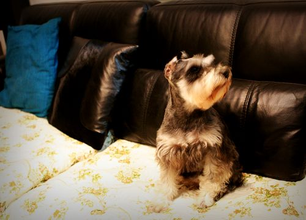
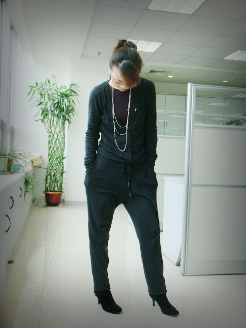
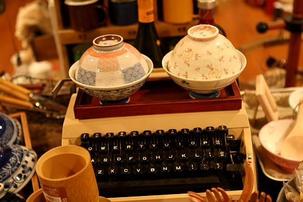
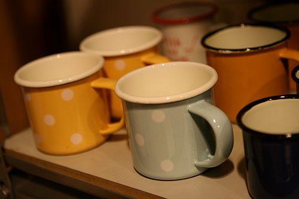
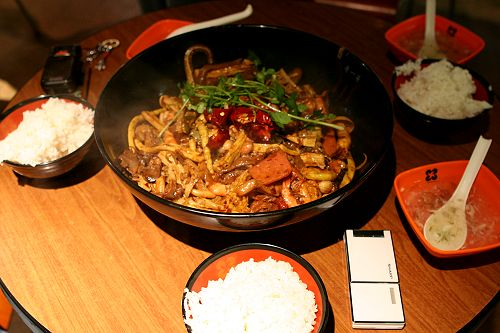

经典 @ Jan 26, 2010

别人的累赘，却是我的甜心。


和钟点工大姐聊天，听说她山西老家的土地在建高速公路的时候被征用，原先18万一亩的征用补偿款，到了他们乡里仅为每人1600元，这个价位就产生在2007年。发钱的时候，乡里的官老爷忍心吗？土壤好的地儿被征用，土质不好的田仍健在。
我曾经认为城市人失业了那就真的失去了生活来源，可是农村人什么都失去了最后还有土地，可以自力更生吃饱肚子。现在，农村人不得不背井离乡到城里打工，城里人前仆后继做房奴还要纳税。
中共中央党校研究室副主任周天勇教授调查得到的数据：中国实际由国家财政供养的公务员和准公务员性质的人员超过7000万人，官民比例高达1：18。
中国历代官民比例表：
西汉：1：7945
唐高宗：1：3927
元成宗：1：2613
清康熙：1：911
中华人民共和国建国初：1：600
现时：1：18

1月13日，下午6点，博客大巴(blogbus.com)CEO窦毅拿着手机从座位上站了起来，在办公室里走了两步，又在原地转了个圈。
从1月5日博客大巴在互联网审查风暴中被封算起，已经八天九夜了。13日那天，窦毅打了无数个电话，手机也死机了四次，他对着电话，不停地重复相同的话语。现在，距离解封只有最后一步—通知域名服务商解封，“但是现在所有电话都联系不到他们。”
口干舌燥的窦毅其实应该算是个幸运儿，和这一轮互联网整治中受到波及的其他创业者相比，他至少知道需要补齐的是哪个手续，自己该往哪些方向努力。
王兴的微型博客网站“饭否”因为“违反国家相关规定”，于2009年7月突然被中国联通北京分公司IDC(互联网数据中心)停止服务之后，至今没有恢复。2009年11月，陈昊芝—译言网董事长兼总经理—也接到了IDC的通知电话，并被告知译言网违反的是“新闻信息服务管理规定”。一个月后，BTChina的站长黄希威接到了一封邮件，被告知自己的网站被取消了备案号……
我们采访到了四个年轻人。他们中最年长的也不过才33岁。他们是最新一代的创业者，他们身处最活跃的互联网市场，他们有无尽的创意和把一切付诸行动的勇气，但是，他们不快乐。
他们本不该如此。他们创办的网站都有数量不菲的用户，有那么一群人还成了他们的粉丝，他们的创业让很多找不到用户的同道羡慕。但现在，他们只是2009年中国互联网整顿中被涉及到的几个年轻人而已。
据人民网的统计，从2009年开始的中国互联网专项整治共涉及到十余万个相关网站，其中也包括了谷歌、百度、土豆、豆瓣等网站。
从被关停到恢复，博客大巴用了8天，译言用了差不多50天，这些日子都是让人忧伤的。陈昊芝说，自己儿子11月19日出生，可11月30日关站后，几乎一个月自己都没有机会抱抱他。“这个失落谁能理解？”
王兴、黄希威心情肯定更灰暗，因为他们的网站至今仍未恢复。连续创业者王兴已经开始为新的项目出差，自称“能力不够”，凑不够千万注册资金的黄希威却只能无奈地说“我力所不能及”，“关了就关了吧”。
同样在这段时间内，Twitter网站的创始人Jack Dorsey开始了自己的再次创业，正式进入电子支付领域。2009年，他的Twitter是最受关注的互联网公司。他意气风发，觉得未来要做的事情还有那么多。
他和窦毅、陈昊芝一般年纪，33岁，拥有着这几个年轻人所没有的东西—一张真正的笑脸。
2010年1月8日，译言网注册的一个新域名“yeeyan.org”上线，其原来的域名“yeeyan.com”至今尚无恢复的消息。陈昊芝期待着“yeeyan.com”能尽快解封。他觉得，现在的互联网环境如果让自己这样“创造社会价值和创新型企业的人”考虑后路，这是一件很可悲的事情。所以“就算是扛，我也会扛过去”。但是，要扛多久，“说实话，我现在还不知道。”
1月13日晚8点左右，在窦毅他们等待了整整一天之后，一位坐在电脑前的工作人员突然喊了起来，“我们被解封了！”几个脑袋顿时围了上去，大家不由自主地鼓了掌，遍地笑容。“赶紧公告！”窦毅一声令下。
20时05分，新浪微博(http://t.sina.com.cn)上出现了博客大巴的最新信息。
此时，窦毅习惯性地掏出手机，看了看，又放回了兜里—电话暂时可以休息一下了。
BlogBus
创立日期 2002年12月
创始人 郭晓雷。2003年10月，窦毅接手BlogBus，任CEO
用户数量 800万注册用户；近7万VIP用户
关停日期 1月5日下午5时左右中止域名解析
恢复日期 1月13日20时
关停原因 因为一篇已删除的低俗色情信息
原文来自：《第一财经周刊》
联体毛衣裤的问题在膝盖，坐时间长了会有鼓包，当然整件衣服柔软到毫无知觉，适合小周末穿。里面配了豆沙色的TEE，外面配长款修身羊毛大衣或短夹克、带帽运动衫。。。都可以。

自从上回染发之后，两天不洗就会出现头皮屑。。。以前我可从来没有这玩意儿，痛苦啊~这次烫的卷比上次小一些，因为头发长得快，那些露出本色的头发影响了细节。这次烫发不是为了批而是为了盘着扎着。
闻听In Cafe进了新货，再忙也要去逛逛，赶在7：30前到她店里，就她一个人坐在里面不知道在干吗？也许是数钱？哈哈哈哈~然后我就冲进去以最快的速度拿了10个新进的碗和一个不知道品名的木盒子，走人。
话说越薄的瓷器工艺越高，这些和风系列的碗一直是我想找的。可是它们又不是和风中的浓烈的藏青色，碗上犹如梦幻的花纹，清淡又清淡。

它们端坐在手动打字机上，别有风韵。以及这些IN CAFE的器具可以把咱家MIX个底朝天，很有生活的味道~

比我买的木盒子略小，在办公桌或者家里的餐边柜上摆放杂乱的文具或袋装咖啡，很不错。


新进的美式搪瓷缸，用它喝冷饮比较合适。

上次去店里还没见到圆点图案的它们。

和我那只可爱的白色壶有同样功能，可直接放煤气灶或电磁炉上加热。咖啡色的不错，适合我们这个年纪的家庭用，红色适合单身在家找找做家务的快感或招待朋友的时候拿出来炫炫。

这是上回买回的木勺和搅拌勺，手感很好。与用其他质感的勺子会有不同的奇妙感受。

用买回的木盒子将散落在餐柜上的面包糕点收拢在一起，立刻变得有气质起来~

生活比较辛苦，除了美美的睡一觉，就剩下吃来犒劳自己，当然这顿也不是什么大餐。重点是朋友在一起说说话，解解闷。饭后逛商场，发现对什么都没有兴趣，是衣服鞋子的设计越来越没有新意，还是我得了无兴趣病？即使如此，我还是拎了条裙子回家。
有没有瞧见之前掉水里的白色SHARP手机？它还活着~

今天，有什么比做一个吃货更满足呢？

工作虽然忙，让人烦躁，可是毕竟还有周末，对吧？
在头发疯长的季节，我再次烫了发。
期望很卷很卷的效果，结果比预期稍微逊色些。
烫发后扎在头顶好象盘起来的效果。
等头发再长些，怎么办呢？
今天用珍珠项链搭配白衬衣去参加什么什么会，会上哈欠连天，不停流眼泪，可是又无法在那样的环境下入眠，真是折磨人。于是我就边打哈欠边擦眼泪，用完一片又一片面巾纸，被感动的惨状？今天估计只工作了约两小时，今天快活明天继续抓狂。
恭喜大巴又开起来了，横戈的头终于不用继续大下去。那些失去联系的乘客此时是否惆怅万分？还继续写吗？大巴经历的小插曲比起google打算放弃中国市场相比，又算不上坎坷，毕竟一艘航空母舰掉转舵头不是轻而易举之事，失去google的我们，还能搜索到什么？
大巴一恢复，中国茶的反向连接里立刻出现许多从咸菜和少爷blog上过来的访问，与其从别人家转道，何不自己收藏下地址？也许，各位多的就是时间和精力？这两样恰恰是我最近奇缺的宝贝。不知道如今讨债与欠债，哪个角色更快活？我现在就是一个讨债鬼，天天一上班什么事不做就是接电话打电话，不同方式和口气，骂骂咧咧度过一天，我那通往心灵的小窗户，因为过度疲劳，感觉已经有老花迹象，照此下去折寿是必然结果。
李开复：来自一个很有智慧的朋友：你不需要别人作为坐标来衡量你真实的自我、真实的价值。永远不会改变的是爱你的人对你的真爱。如果能够排除世俗的看法，心灵就可以轻装上阵，因为没有什么真实的东西是会真正失去的。